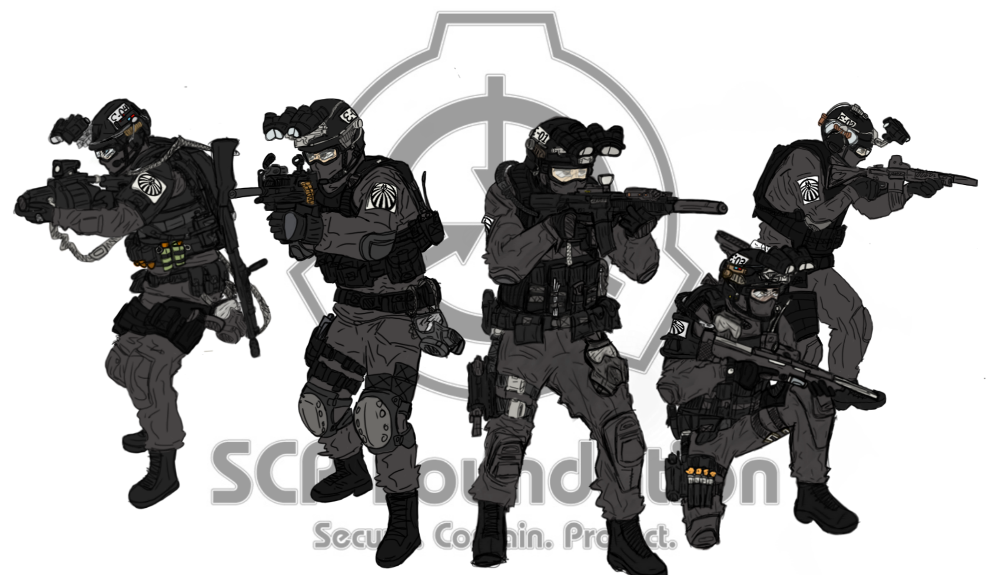

MTF NINE TAILED FOX
A Epsilon-11, desginada "The Nine Tailed Fox" (Rapousa de Nove Caudas) é uma das Forças Tarefas Móveis mais renomadas da Fundação. Esta Força Tarefa é considerada a mão direita da MTF Alpha-1 (Red Right Hand)
São enviadas em casos de segurança interna, principalmente violações de contenção e casos de extrema importância.
Carregam em seu uniforme o seguinte brasão, símbolo de sua unidade: